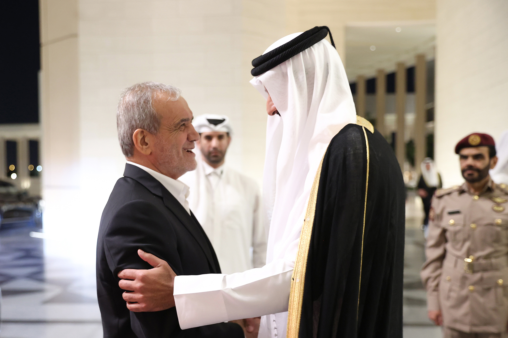

به گزارش اکوایران، طی هفتههای اخیر، تحولات بسیار خطرناکی خاورمیانه را به لرزه درآورده است. تشدید دشمنیها بین اسرائیل و ایالات متحده از یک سو و ایران و محور مقاومت از سوی دیگر، موجب نگرانی اعضای ششگانه شورای همکاری خلیج فارس شده است. با توجه به اینکه جنگی تمامعیار در منطقه میتواند شدیداً به امنیت ملی و سلامت اقتصادی شورای همکاری خلیج فارس آسیب بزند، این نگرانیها کاملاً توجیهپذیر است.
دیپلماسی به جای رویارویی
طی این ماه، کشورهای عضو شورای همکاری خلیج فارس به جای رویارویی به دیپلماسی روی آوردهاند و در تلاش برای ترویج
گفتگو به عنوان جایگزینی معقول برای جنگ هستند. در تاریخ ۲ و ۳ اکتبر، قطر میزبان سومین اجلاس گفتگوی همکاری آسیا
بود که مقامات عرب حاشیه خلیج و ایرانی را به دوحه آورد. در پایتخت قطر، وزرای کشورهای شورای همکاری خلیج فارس بر
ضرورت کاهش تنش و تعامل تأکید کردند.مسعود پزشکیان، رئیسجمهور ایران در حین دیدار با فیصل بن فرحان، وزیر خارجه
سعودی در حاشیه این اجلاس عزم تهران برای بهبود روابط کشورش با پادشاهی را ابراز کرد. پزشکیان گفت: «ما کشورهای
اسلامی، از جمله عربستان سعودی را برادران خود میدانیم و بر اهمیت کنار گذاشتن اختلافات برای تقویت همکاری تأکید
میکنیم».
دیپلمات ارشد ریاض توضیح داد که عربستان سعودی به دنبال «بستن دائمی فصل اختلافات با ایران و تمرکز بر حل مسائل و
توسعه روابط به عنوان دو کشور دوست و برادر است». بن فرحان همچنین به رئیسجمهور ایران گفت: «ما به خرد و بصیرت شما
در مدیریت وضعیت و کمک به صلح و ثبات در منطقه اعتماد داریم».
در ۹ اکتبر، سیدعباس عراقچی، دیپلمات ارشد ایران به ریاض رفت و با محمد بن سلمان، ولیعهد و نخستوزیر سعودی صحبت
کرد. روز بعد، عراقچی به دوحه رفت و با شیخ محمد بن عبدالرحمن بن جاسم آل ثانی، نخستوزیر و وزیر امور خارجه قطر
برای بحث درباره تحولات منطقه، به ویژه درگیریهای غزه و لبنان دیدار کرد.
شیخ محمد بر ضرورت تلاشهای منطقهای و بینالمللی برای کاهش تنشها و جلوگیری از گسترش دشمنیها در خاورمیانه تأکید
داشت و خاطرنشان کرد که دوحه آماده است تا اقداماتی برای تقویت امنیت و ترویج ثبات در منطقه و فراتر از آن انجام
دهد.
در این مرحله، ایرانیها نگران پاسخ احتمالی اسرائیل به «عملیات وعده صادق ۲» هستند. تهران بر روی مخاطرات بسیاری که یک جنگ وسیع منطقهای میتواند برای منافعش به همراه داشته باشد، متمرکز است. در حالی که تهران تلاش میکند تا از نظر نظامی برای حمله احتمالی تلآویو آماده باشد، همچنین در حال پیشبرد ابتکارات دیپلماتیک خود در برابر کشورهای عرب، به ویژه عربستان سعودی است. پیامهای تهران درباره مشارکت اعضای شورای همکاری خلیج فارس در حمله اسرائیل و/یا آمریکا به ایران، به عنوان یادآور و هشداری به پادشاهیهای عرب خلیج فارس عمل میکند. اما بُعد دیگر مسئله این است که ایران در تلاش بوده تا آنها را از تمایل تهران برای ادامه دیپلماسی و تنشزدایی با سعودیها و دیگران در خلیج فارس مطمئن کند، حتی در حالی که پویاییهای تنشها در خاورمیانه همچنان در حال تشدید است. حمیدرضا عزیزی، پژوهشگر مهمان در مؤسسه آلمانی امور بینالملل و امنیت توضیح داد: «ایران مصمم است که این مسیر را ادامه دهد به شرطی که به منافع متقابل احترام گذاشته شود. اگر کشورهای عربی در این جنگ احتمالی بین ایران و اسرائیل مداخله نکنند، میتوانند مطمئن باشند که منافع آنها نیز توسط ایران محترم شمرده خواهد شد».

علاوه بر هشدار به کشورهای شورای همکاری خلیج فارسدر مورد همکاری نظامی با ائتلاف آمریکایی-اسرائیلی علیه ایران، تهران در تلاش است تا حمایت بیشتری از سوی منطقه برای آتشبس غزه و لبنان جلب کند. با توجه به اینکه تلآویو ضربات عمدهای به حزبالله طی ماههای اخیر وارد کرده، عملیات نظامی اسرائیل در لبنان تهران را با چالشهایی مواجه کرده است. این عامل روشن میکند که چرا جمهوری اسلامی اکنون بیشتر از هر زمان دیگری برای آتشبس در تلاش است. به گفته عزیزی : «با یادآوری خطرات جنگ وسیع به کشورهای عرب، طرف ایرانی همچنین میخواهد آنها را برای آغاز نوعی فشار هماهنگ منطقهای برای آتشبس در منطقه در کنار خود داشته باشد».